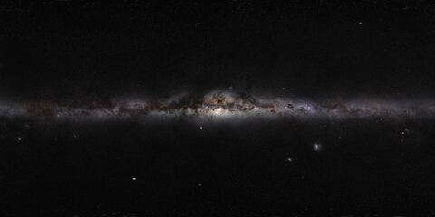
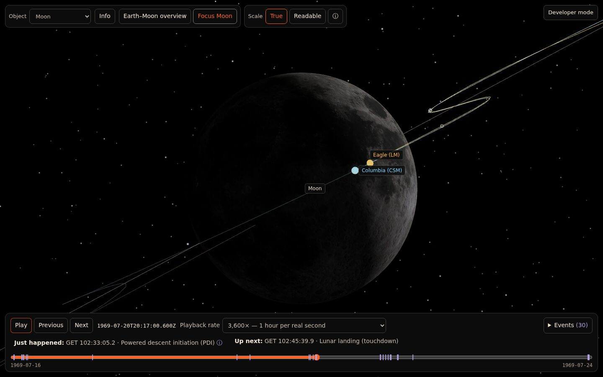
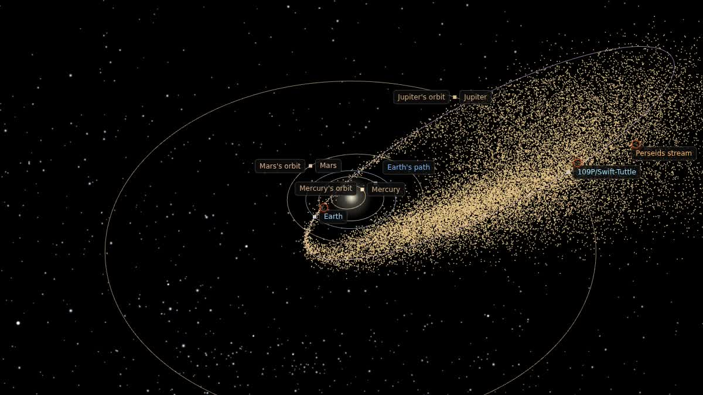
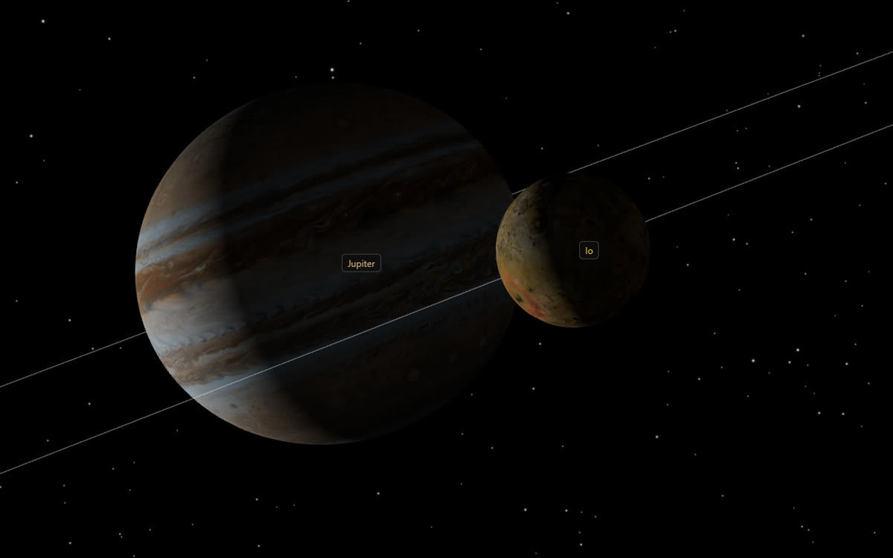

Everything in space, where it is right now.
Astraeus does the hard part of space on the web: time, orbits, reference frames and astronomical scale. Every body answers one question, where are you at this moment, and every answer says where it came from. You bring the story.
// Where was the Moon when Eagle landed? moon.stateAt(Date.parse("1969-07-20T20:17:40Z"), "earth") { frame: "EQJ", // J2000 equatorial center: "earth", positionKm: [-385_000, -48_000, -31_000], provenance: { sourceType: "ephemeris", sources: ["orb.js lunar series"], } } // JPL Horizons, same instant: −385,275 · −47,906 · −30,879 km
Four layers, one door in.
A planet, a spacecraft, a comet and twenty-five thousand meteoroids all enter the same way. Everything downstream draws them the same way.
- 01 · STATE
Where and when
Time scales, positions, velocities, orientation and frames, each with its source and accuracy.
- 02 · SOURCES
Plug in the data
Planet theory, NASA mission samples, published orbits, measured meteor catalogues. Swap one without touching the rest.
- 03 · DRAWING
Safe at any scale
True or readable scale, a floating origin so 51 AU stays steady, paths, labels, light and a real star sky.
- 04 · STORY
Time you can play
Timelines, events, focus and follow, story panels that open as playback reaches their moment, and an info panel that shows what's measured and what's filled in.
Photos, or a recipe.
Where is Io, a moon of Jupiter? One way is a table with a position for every few minutes: a photo album of the orbit. The other keeps a short recipe, a few numbers that rebuild the path at any moment. Astraeus stores positions as recipes.
Hour 0.0 · Io is 421,000 km from Jupiter's centre
- 47×smaller than the table for Io alone: 1.1 MB instead of 50.5 MB for 20 years.
- 3.5 cmIo's worst difference from NASA's Horizons over those years. All 115 moons of Jupiter stay within 1 m.
- 6×smaller planet positions: 0.21 MB instead of 1.4 MB, within 1 km of the series they replace, for 1969 to 2045.
The dots and the curve are drawn from the real fitted data, two of Io's pieces (96 numbers) and one of Jupiter's (48, to put Io about Jupiter's centre), starting 4 November 2016. Data: JPL Horizons, NASA/JPL-Caltech Solar System Dynamics. Size figures are measured, not estimated. The table sizes count six 8-byte numbers per row.
The shelf, ready to use.
Bodies, sky and data that ship with the engine's demos, each with its source and licence on record.

8,920 naked-eye stars from the HYG catalogue, and ESO's panorama in the same frame.
Perseids from 2025, every meteor on its own ellipse. CC BY 4.0.
A comet out to 51 AU, an asteroid from a settings file, and 30 timed Apollo events.
Built with it.
Three experiences, from a Moon landing to two meteor showers to every planet and its moons, on the same engine with no special cases. Open Developer mode in any of them to see what's underneath, or to copy a link to the exact view on screen.

Apollo 11
Eight days to the Moon and back, rebuilt from NASA's mission report. Seven story panels open as the clock reaches each step, from leaving Earth orbit to splashdown, each with its sources.

Meteor showers
Earth through the trail of comet Swift–Tuttle, and with one switch the trail of asteroid 3200 Phaethon. Each shower is one settings file, drawn from measured Global Meteor Network orbits, with story panels that say what is measured here and what is filled in.

The planets and their moons
A switch in the top bar picks any planet from Mercury to Pluto, and the view opens centred on it with its tagged places. Every known moon sits on its real orbit: 14 as mapped globes, the rest as dots in family colours, and Saturn, Uranus and Neptune carry their rings. Jupiter keeps its story panels, and Io's position comes from the JPL Horizons curve fits described above.
- 1question every body answers: where are you, now?
- 25,588measured meteor orbits, drawn one by one
- 51AUout to a comet's far end, without losing precision
- 1settings file was all a new shower needed